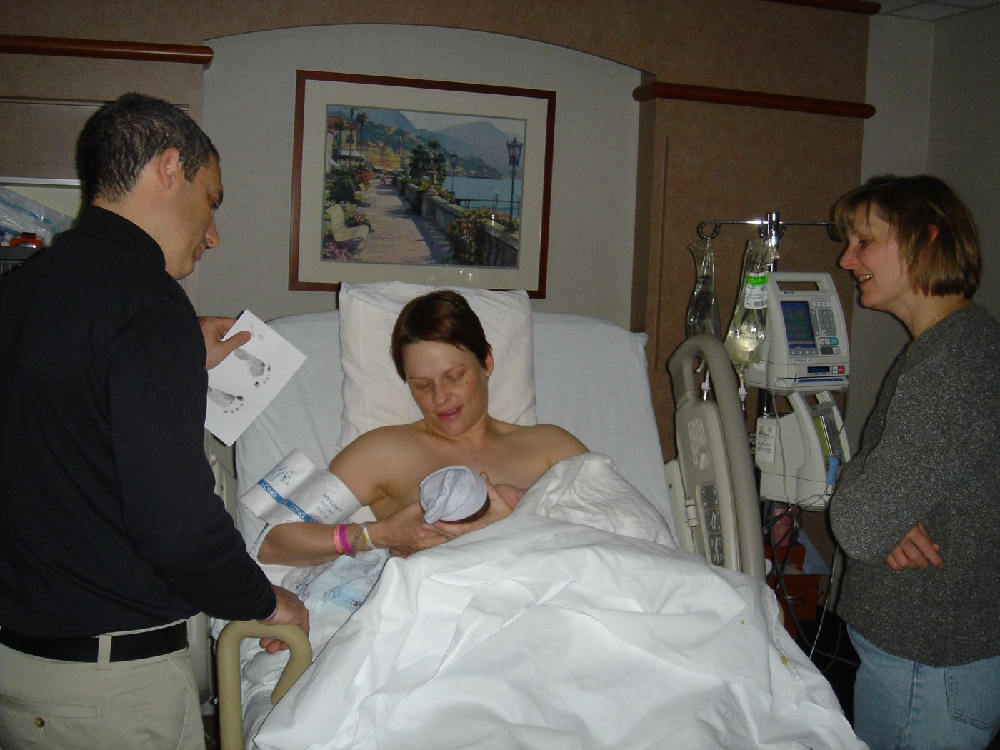

Página 10 · Eixo humor — o espectro e o blues
Não é só cansaço: o baby blues
Nota de tom. Este eixo trata sofrimento psíquico. O texto é clínico e sóbrio, sem dramatização; as fotos de mãe-bebê são didáticas, legendadas pela função.
Há um espectro clínico definido por trás, e o benigno tem começo e fim marcados. Banalizar como "só cansaço" perde tanto a depressão que se instala quanto a causa orgânica que se trataria.
Transtorno de humor pode ocorrer na gestação e no puerpério — pico no 1º mês
O transtorno de humor puerperal não é exclusivo do pós-parto: pode ocorrer tanto na gestação quanto no puerpério. Mas a maior chance de um transtorno de humor é no 1º mês pós-parto — a janela de maior vulnerabilidade fica logo após o nascimento.
É diagnóstico de exclusão: pesquisar a causa orgânica (tireoide)
Um princípio governa todo o eixo: o transtorno de humor puerperal é um diagnóstico de exclusão. Antes de firmá-lo, é preciso pesquisar causas orgânicas — porque muitos sinais e sintomas se confundem tanto com alterações fisiológicas da gravidez e do puerpério (o cansaço, a labilidade emocional, quase universais no pós-parto) quanto com doenças orgânicas que imitam o quadro psiquiátrico. O exemplo clássico é a disfunção de tireoide: um hipo ou hipertireoidismo pode justificar boa parte desses sintomas. Sempre ter isso em mente diante de um quadro psiquiátrico no puerpério — pensar em causa fisiológica e em causa orgânica antes de rotular como transtorno de humor.
Os fatores de risco
Vários fatores aumentam a chance. Doença psiquiátrica prévia — mesmo que já tratada, acompanhada e super controlada, é fator de risco para recorrência na gestação e no pós-parto. Falta de suporte familiar / rede de apoio — faz muita diferença no puerpério, quando a demanda é máxima. Gestação não planejada ou indesejada e a paciente sem parceria (que também recai na falta de suporte). E ser primigesta ou paciente mais jovem. É o retrato de quem chega ao pós-parto com menos reserva emocional e mais demanda.
As três entidades que sempre caem: blues → depressão → psicose
São três as manifestações que sempre aparecem nas provas, dispostas num espectro de gravidade crescente: baby blues → depressão pós-parto → psicose puerperal. Entender que são um espectro — e não três caixas isoladas — é o que permite diferenciá-las pela temporalidade e pela gravidade.
O baby blues: o comum, benigno, autolimitado ≤2 semanas
O baby blues é o mais comum dos três. A paciente apresenta choro fácil, labilidade emocional, a sensação de que "não está dando conta" e ansiedade. Atinge mais ou menos metade das puérperas (a literatura cita também a faixa de 50% a 80%). É um quadro benigno e autolimitado: começa nos primeiros dias e se resolve sozinho nas primeiras 2 semanas de pós-parto — início marcado e resolução espontânea igualmente marcada. Parece ter relação importante com distúrbios do ciclo circadiano / privação de sono, que ocorre em praticamente 100% das puérperas — o recém-nascido fragmenta o sono materno de forma quase universal. Pela boa evolução, o baby blues dispensa tratamento farmacológico: a conduta é suporte (acolhimento, orientação, apoio da rede).
O diferenciador: no blues, o autocuidado e o cuidado com o bebê estão preservados
Aqui está o divisor de águas com a depressão. No baby blues, a paciente não perde a capacidade de autocuidado nem a capacidade de cuidar do bebê. Ela é muito ansiosa e preocupada, vive achando que faz tudo errado — mas é capaz de cuidar. Essa preservação da funcionalidade é o que a separa da depressão pós-parto, que é mais persistente e pode comprometer o cuidado. Choro e labilidade com o bebê bem cuidado e a mãe se cuidando: pensa em blues. O mesmo quadro que se arrasta e derruba o autocuidado: já não é blues.

No baby blues, a puérpera pode estar emotiva ou ansiosa nos primeiros dias, mas mantém contato, atenção e cuidado com o recém-nascido. É o diferenciador prático contra a depressão, em que o prejuízo funcional é mais importante.
David Goodman — "A few moments more", via Wikimedia Commons. Licença CC BY 2.0 · fonte
- TEV6 semanas · pico precoce
- Peri-partoreintrodução 8–12h
- Baby blues≤ 2 semanas
- Depressão≥ 2 semanas
- Psicose1ª semana / 1º mês
Quiz — fixação
Puérpera no 5º dia pós-parto: choro fácil, labilidade, ansiosa, achando que "não dá conta". Cuida bem do bebê e de si. Qual a conduta?
- B — baby blues. Início nos primeiros dias, autocuidado e cuidado com o bebê preservados, quadro benigno: resolve sozinho em ~2 semanas e pede suporte, não fármaco.
- A. Medica um quadro fisiológico autolimitado — o blues dispensa farmacoterapia.
- C. Desproporcional: internação é para a psicose (emergência), não para o blues benigno.
- D. Diagnostica pela intensidade: o que definiria depressão é a duração (≥2 semanas) e o comprometimento funcional, ausentes no 5º dia com cuidado preservado.
Sobre o transtorno de humor puerperal, é correto afirmar:
- B — exclusão. Sintomas se confundem com o fisiológico do puerpério e com doenças orgânicas (tireoide à frente), que precisam ser afastadas.
- A. Inverte a lógica: firmar sem excluir o orgânico é o erro.
- C. Restringe indevidamente — pode ocorrer na gestação, embora o pico seja o 1º mês pós-parto.
- D. Contraria a benignidade do blues, que se resolve com suporte.
Quando o quadro passa de duas semanas e o autocuidado começa a ceder, já não é blues — é depressão pós-parto, e o degrau de tratamento muda.